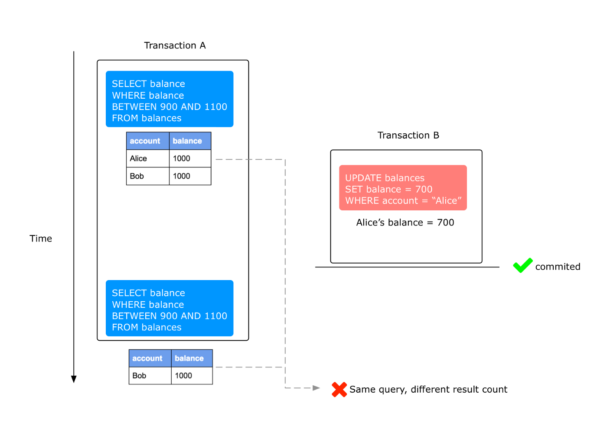

6 锁
Last update: 2023-03-28
Table of Content
6-1 Innodb 存储引擎中的锁#
锁的类型#
允许事务读一行数据
允许事务删除/更新一行数据
一致性非锁定读 Consistent Nonlocking Reads#
- 如果读取的行正在进行UPDATE/DELETE操作，读取操作不会等待行锁的释放，而是去读取行的另一个快照数据
- 快照数据通过 undo段实现，一行数据可能有多个快照数据[多版本技术]，由此带来的控制成为多版本并发控制Multi Version Concurrency Control
- 在REPEATABLE READ下，一致性读总是读取事务开始时的快照数据
一致性锁定读#
SELECT … FOR UPDATE
- 对于读取的行记录加一个 X 排他锁，其他事务不能对锁定的行加任何锁
SELECT … LOCK IN SHARE MODE
- 对于读取的行记录添加一个 S 共享锁。其它事务可以向被锁定的行加 S 锁，但是不允许添加 X 锁，否则会被阻塞住
6-2 锁的算法#
Record lock#
单行记录上的锁，Record Lock 总是会锁住索引记录。如果InnoDB存储引擎建立的时候没有设置任何一个索引，这时InnoDB存储引擎会使用隐式的主键来进行锁定
Gap lock#
锁定一个范围 不包含记录本身
Next-Key lock#
-
Record lock + Gap lock 锁定一个范围 包括记录本身
-
解决 Phantom Problem
- Phantom Problem [幻读] 在同一事务下，连续执行两次相同的SQL语句可能导致不同的结果，第二次的SQL语句可能会返回之前不存在的行
create table balances (account varchar(30),balance int)
Committed Read下会出现phantom read的问题#
- 
-
在 Repeatable Read 的隔离级别下，采用 Next-Key locking的方式加锁，上图Transaction B的update操作会被阻塞，保证Transaction A的两次查询返回相同的结果
-
当查询的索引含有唯一属性时，innodb存储引擎会对Next-Key Lock进行优化，将其降级为Record Lock，即锁住索引记录本身，而不再是范围。 对于唯一索引，其加上的是Record Lock，仅锁住记录本身。但也有特别情况，那就是唯一索引由多个列组成，而查询仅是查找多个唯一索引列中的其中一个，那么加锁的情况依然是Next-key lock。
6-3 锁的问题#
Dirty reads#
- 不同的事务下，当前事务可以读到其他事务未提交的记录

Non-repeatable reads#
- 一次事务内两次读到的[已提交]数据不一致

Phantom reads#
- 同上节
6-4 阻塞#
- 一个事务中的锁需要等待其他事务中的锁释放其所占用的资源
- innodb_lock-wait_timeout=50: 控制等待的时间
- innodb_rollback_on_timeout=OFF: 是否在超时后进行回滚
6-5 死锁#
死锁的概念#
- 两个或两个以上的事务在执行过程中，因争夺锁资源而造成的一种互相等待的现象，解决死锁最简单的一种方法是超时，发现死锁后，Innodb存储引擎会马上回滚一个事务。
死锁用例#
- Client A 创建了只包含一行的表，并开启了一个事务。在事务内，A 通过 SELECT … LOCK IN SHARE MODE获得了S Lock:
mysql> CREATE TABLE t (i INT) ENGINE = InnoDB; Query OK, 0 rows affected (1.07 sec) mysql> INSERT INTO t (i) VALUES(1); Query OK, 1 row affected (0.09 sec) mysql> START TRANSACTION; Query OK, 0 rows affected (0.00 sec) mysql> SELECT * FROM t WHERE i = 1 FOR SHARE; +------+ | i | +------+ | 1 | +------+-
Client B开启了事务并尝试删除数据
mysql> START TRANSACTION; Query OK, 0 rows affected (0.00 sec) mysql> DELETE FROM t WHERE i = 1;-
此时删除操作无法获得X Lock，因为和Client A持有的S Lock不兼容，此时Client B被阻塞
-
最后 Client A 尝试删除操作
mysql> DELETE FROM t WHERE i = 1;-
此时发生Deadlock，A尝试获得X Lock去删除数据，但B已经请求获得一个X Lock并等待 A 释放S Lock，A中的S Lock无法升级成X Lock因为B已经获得X Lock。最终，Innodb给A(or B)返回了error并释放了锁，Client B(or A)返回报错:
ERROR 1213 (40001): Deadlock found when trying to get lock; try restarting transaction-
B(or A)获得了锁并成功删除数据